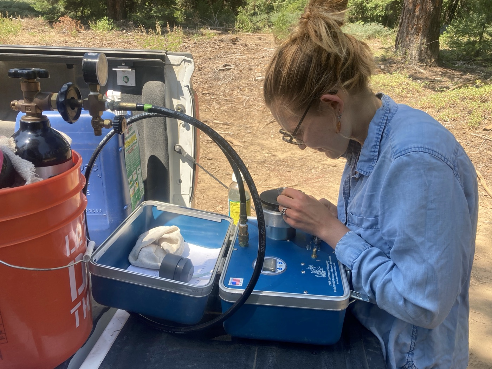

Live Fuel Moisture and Drought Stress
Two things are certain to be features of our future forests: drought and wildfire. These two processes are linked in many ways (for examples, drought kills trees, which increases fire risk, while fire kills trees, which impacts the health of remaining trees). At the leaf-level, both fire dynamics and drought status are related to how hydrated plant tissues are. The water content of plant tissues are a key indicator of fire risk (just ask Smokey Bear!). Leaf hydration (measured in terms of water potential) is also an important sign of how drought stressed a plant is, and informs how we understand drought induced mortality across the landscape.
Despite these similar metrics, we have yet to establish whether or not there are predictable relationships between plant hydration as it is measured in the context of drought vs. how it is measured to assess fire risk and plant flammability. To complicate matters, different species likely exhibit different relationships between water potential and LFM, and these relationships likely also change over time due to phenology. Thus, we ask:
- How well do reductions in plant hydration (water potential and LFM) measured in the lab reflect field-based patterns measured over a season?
- How do water potential and LFM differ in their relationship with flammability, and how does this vary across taxonomic groups?
- How does flammability change over the course of a season (i.e., as shifts in plant hydration and phenology occur) and how does this vary across species?
Check out the paper below to read more!
Abstract
Background
Drought and wildfire are linked by their relationships with plant hydration, yet drought- and fire-focused research use discipline-specific hydration metrics to capture plant stress and fuel flammability. We investigated potential drought–wildfire dynamics in angiosperms and gymnosperms common to Sierra Nevada mixed conifer forests by relating plant drought status (water potential) to water content (live fuel moisture, LFM) and to flammability. We conducted laboratory flammability tests coupled with a benchtop drydown and measurements of physiological drought response (the turgor loss point, TLP). We measured water potential, LFM, and phenology during a seasonal drydown in the field.
Results
Gymnosperms showed inconsistent relationships between water content and water potential across drydown type (field vs. lab), complicating how we measure their potential drought-wildfire relationships. In contrast, angiosperms had consistent hydration relationships, showing promise for relating drought stress to flammability. Physiological adjustments occurring near the TLP and phenological patterns impacting dry matter development drove differences across functional groups. Decreased plant hydration increased flammability, and LFM predicted flammability better than water potential—likely because LFM captured both hydration and shifts in leaf and branch dry matter associated with phenology.
Conclusions
Our results suggest that phenological development and drought response mediate the relationship between drought stress, tissue water content, and tissue flammability in seed-producing plants (i.e., angio- vs gymnosperms). This work links key ecological processes, drought and wildfire, and advances our ability to predict wildfire risk using species composition and drought stress.
